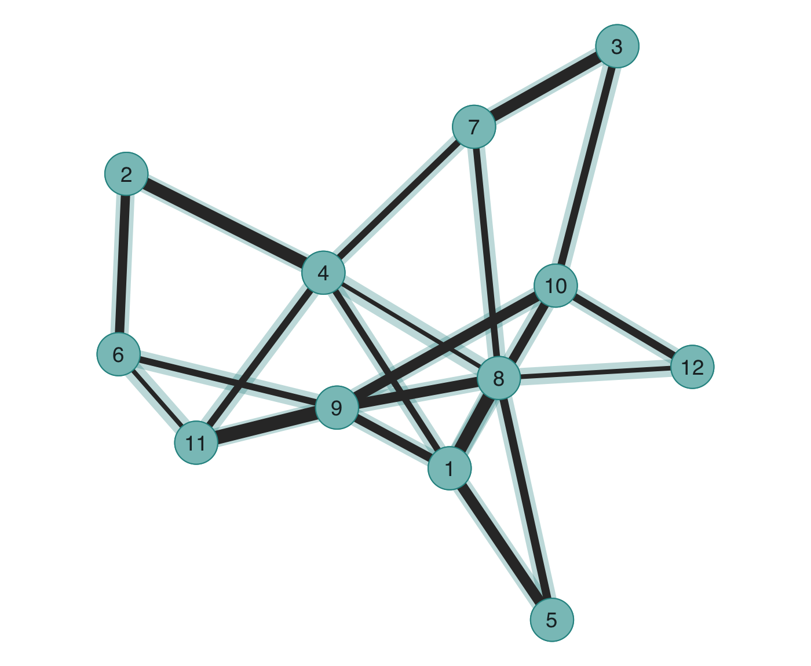

bisonR
Bayesian inference of animal social networks in R
bisonR implements the BISoN framework (Hart et al. 2023). It estimates each edge weight from observation data as a posterior distribution (the range of plausible values given the data and prior), so the precision of each estimate reflects how much that dyad was sampled. These posteriors can then be used to calculate network metrics, fit regression models and compare networks.

Edge weight models
Binary and count models of social events that account for observation effort, with optional fixed and random effects, partial pooling and zero inflation. Faster conjugate models, fitted without MCMC (the sampling method that Stan uses), are available for simple cases.
Diagnostics and plots
Trace plots of the MCMC sampler, prior and posterior predictive checks, and network plots that show the credible interval of each edge.
Downstream analyses
Posterior distributions of node and network metrics, dyadic and nodal regression with brms, edge mixture models and non-random association tests.
A first model
library(bisonR)
sim_data <- simulate_bison_model("binary", aggregated = TRUE)
fit_edge <- bison_model(
(event | effort) ~ dyad(node_1_id, node_2_id),
data = sim_data$df_sim,
model_type = "binary",
priors = get_default_priors("binary")
)
summary(fit_edge) # Edge weights with credible intervals
plot_network(fit_edge, lwd = 5) # Sociogram showing uncertainty
extract_metric(fit_edge, "node_strength") # Posterior of each node's strengthThe left-hand side of the formula, (event | effort), gives the number of social events seen and how much each dyad was observed. The right-hand side, dyad(node_1_id, node_2_id), estimates an edge weight for each dyad (pair of individuals). The Getting started article explains each step.
Installation
bisonR fits models with Stan through the cmdstanr package, so install cmdstanr and CmdStan first:
install.packages("cmdstanr", repos = c("https://stan-dev.r-universe.dev", getOption("repos")))
cmdstanr::check_cmdstan_toolchain(fix = TRUE)
cmdstanr::install_cmdstan()Then install bisonR from GitHub:
# install.packages("remotes")
remotes::install_github("JHart96/bisonR")On Windows you may need to install Rtools first. The Windows installation article covers common problems. Upcoming releases are developed on release/<version> branches. To install one, use, for example, remotes::install_github("JHart96/bisonR@release/1.1.0").
Citing bisonR
Hart, J. D. A., Weiss, M. N., Franks, D. W., & Brent, L. J. N. (2023). BISoN: A Bayesian framework for inference of social networks. Methods in Ecology and Evolution, 14(9), 2411–2420. https://doi.org/10.1111/2041-210X.14171
Getting help
Ask questions in Discussions and report bugs in Issues. Contributions are welcome; see the contributing guide.